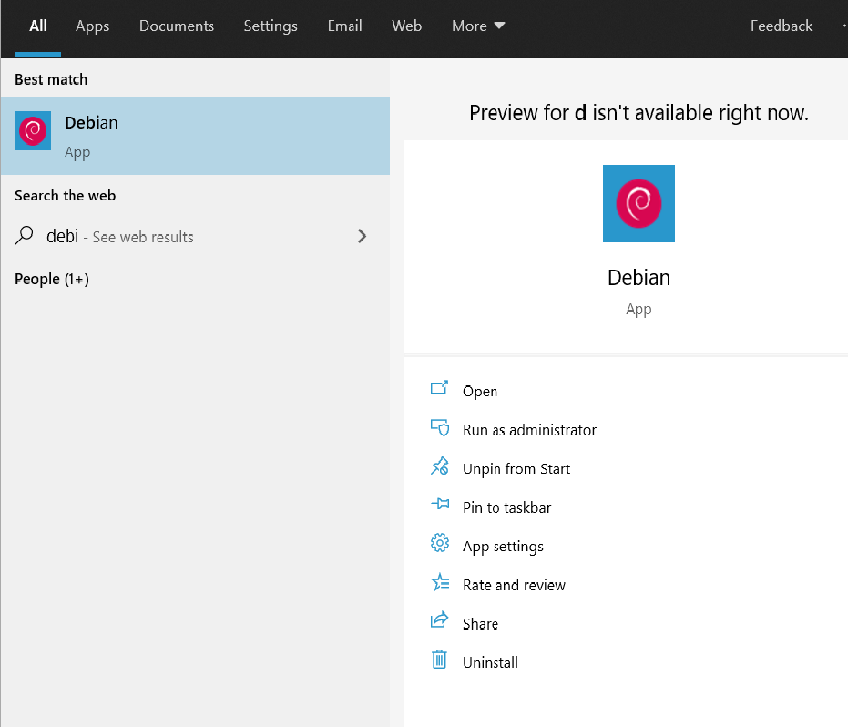
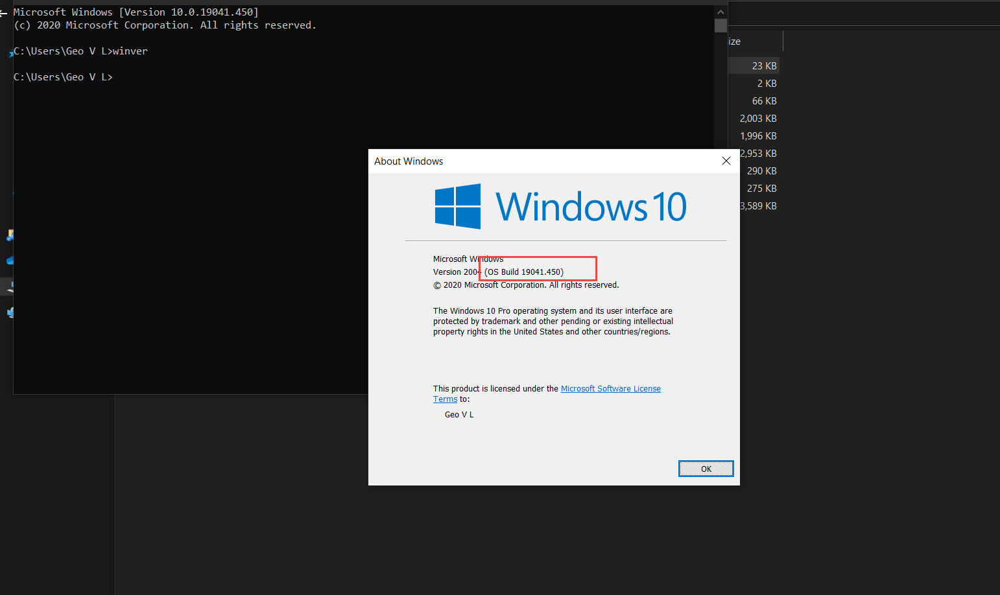

Working WSL2 Debian in Windows10
We can configure Debian Linux from our Windows 10 machine as Windows App. When we work with static site generators like Hugo or need to check any thing in linux from linux machine we can choose this method of linux
If you have confusions in how to install a Ubuntu subversion you can go through my previous post: Install the Windows Subsystem for Linux

For configuring this in our Windows10 machine we need to follow the following steps.
Initial Settings Link to heading
Ensure that Windows 10 update is available in our machine. For checking this do the following steps
Check your version of Windows Link to heading
It can be done very easily by using in command prompt. For checking this we have to type this command
C:\Users\Geo V L> winver
If the version is greater than “Version 2004(OS Build 19041.XX)” this WSL2 feature can be installed in your machine.

Otherwise you can check for updates in your Windows. This can be done in the following way:
Start>Settings> Update & Security
Once you are ready with this Version 2004(OS Build 19041.XX) We can start the process
Install the Windows Subsystem for Linux Link to heading
Before installing any Linux distributions on Windows, you must enable the “Windows Subsystem for Linux” optional feature.
Open PowerShell as Administrator and run:
dism.exe /online /enable-feature /featurename:Microsoft-Windows-Subsystem-Linux /all /norestart
To only install WSL 1, you should now restart your machine and move on to Install your Linux distribution from the Windows Store!!
Update to WSL 2 Link to heading
Enable the ‘Virtual Machine Platform’ optional component Link to heading
Before installing WSL 2, you must enable the “Virtual Machine Platform” optional feature.
dism.exe /online /enable-feature /featurename:VirtualMachinePlatform /all /norestart
Restart your machine to complete the WSL install and update to WSL 2.
Set WSL 2 as your default version Link to heading
Open PowerShell as Administrator and run this command to set WSL 2 as the default version when installing a new Linux distribution
wsl --set-default-version 2
You might see this message after running that command: WSL 2 requires an update to its kernel component. In that case you have to update the Kernel. For updating Kernel you can download it directly from here or Learn it from windows documentations